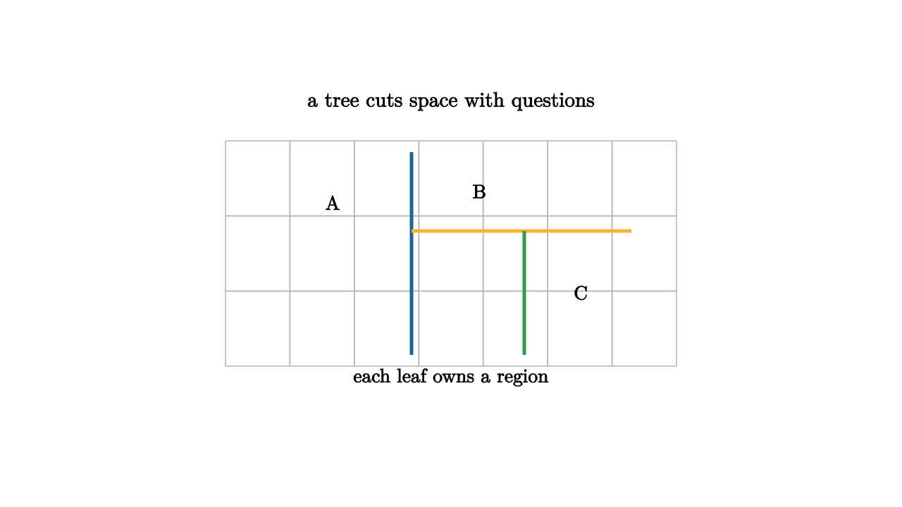

A decision tree feels like an interview. Is the loan amount above this threshold? Is the temperature below that value? Did the message contain this word? Each question sends the example left or right. After several questions, the example lands in a leaf, and the leaf gives a prediction.
Geometrically, a tree partitions feature space. In two dimensions, each threshold question draws a vertical or horizontal cut. Several questions carve the plane into rectangles. Inside each rectangle, the tree uses a constant prediction or a simple summary of the training labels in that leaf.

source
let soft = |col, amount| lerp(WHITE, col, amount)
mesh tree = [
center{1.35u} Text("a tree cuts space with questions", 0.66),
stroke{LIGHT_GRAY, 1} LineGrid([-2, 2, 8], [-1, 1, 4], 1),
stroke{BLUE, 3} Line(0.35l + 0.9d, 0.35l + 0.9u),
stroke{ORANGE, 3} Line(0.35l + 0.2u, 1.6r + 0.2u),
stroke{GREEN, 3} Line(0.65r + 0.9d, 0.65r + 0.2u),
center{1.05l + 0.45u} Text("A", 0.62),
center{0.25r + 0.55u} Text("B", 0.62),
center{1.15r + 0.35d} Text("C", 0.62),
center{1.1d} Text("each leaf owns a region", 0.62)
]The learning problem is to choose useful questions. For classification, a split is good when it makes child nodes more pure. One common impurity measure is Gini impurity:
where $p_c$ is the fraction of examples in class $c$. A pure node has impurity 0. A mixed node has higher impurity. The tree searches for splits that reduce impurity.
source
let soft = |col, amount| lerp(WHITE, col, amount)
"Root Question"
mesh scene = [
center{1.3u} Text("the root asks the first broad question", 0.62),
center{0r + 0.45u} fill{soft(BLUE, 0.16)} stroke{BLUE, 2} Rect([1.2, 0.38]),
center{0r + 0.45u} Text("x1 < 3?", 0.62),
stroke{BLACK, 2.5} Arrow(0.35l + 0.2u, 0.95l + 0.45d),
stroke{BLACK, 2.5} Arrow(0.35r + 0.2u, 0.95r + 0.45d)
]
play Fade(0.8)
"Second Questions"
scene = [
center{1.3u} Text("later questions refine local regions", 0.62),
center{1.0l + 0.45d} fill{soft(ORANGE, 0.16)} stroke{ORANGE, 2} Rect([1.0, 0.32]),
center{1.0l + 0.45d} Text("x2 < 5?", 0.62),
center{1.0r + 0.45d} fill{soft(GREEN, 0.16)} stroke{GREEN, 2} Rect([1.0, 0.32]),
center{1.0r + 0.45d} Text("word?", 0.62)
]
play Trans(0.8)
"Regions"
scene = [
center{1.3u} Text("the final model is a piecewise rule", 0.62),
stroke{BLUE, 3} Line(0.3l + 0.9d, 0.3l + 0.9u),
stroke{ORANGE, 3} Line(0.3l + 0.1u, 1.4r + 0.1u),
stroke{GREEN, 3} Line(0.7r + 0.9d, 0.7r + 0.1u)
]
play Trans(0.8)Trees are interpretable because a prediction comes with a path of questions. That path can be read aloud. The model says, "This example went right at the first split, left at the second split, and landed in a leaf where most training examples had label B." This is valuable in domains where explanations matter.
Single trees can be unstable. A small change in data can change an early split, which changes every region below it. Ensembles address this by averaging many trees. Random forests average trees trained on random samples and random feature subsets. Gradient boosted trees build trees sequentially, each one focusing on residual errors left by the previous ensemble.
The geometric cost of trees is their axis alignment. A diagonal boundary may require many rectangular cuts. Feature engineering can help by creating coordinates that match the questions the tree needs to ask. Ensembles can approximate complicated boundaries, but the basic building block remains a threshold question.
Trees teach a practical lesson about models: complexity can be local. A tree may use many questions in a hard region and few questions in an easy region. This makes it a natural model for tabular data, where different cases often need different tests.